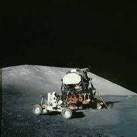
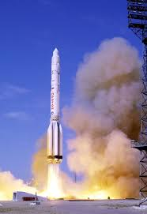

Наша мета – відправити першу вантажну місію на Марс у 2022 році. Ця місія повинна перевірити наявність води, визначити основні джерела небезпеки та доставити вантажі, необхідні для розгортання первинної інфраструктури для генерації енергії, видобутку корисних копалин та підтримки життя.
План
- 2018: Побудувати допоміжну базу для запусків в Бока Чіка
- 2019: Дебют ракети Falcon Big
- 2020-2021: Тестові запуски BFR і вивід її на орбіту
- 2022: Запуск двох місій до Марсу з вантажем, але без команди
 